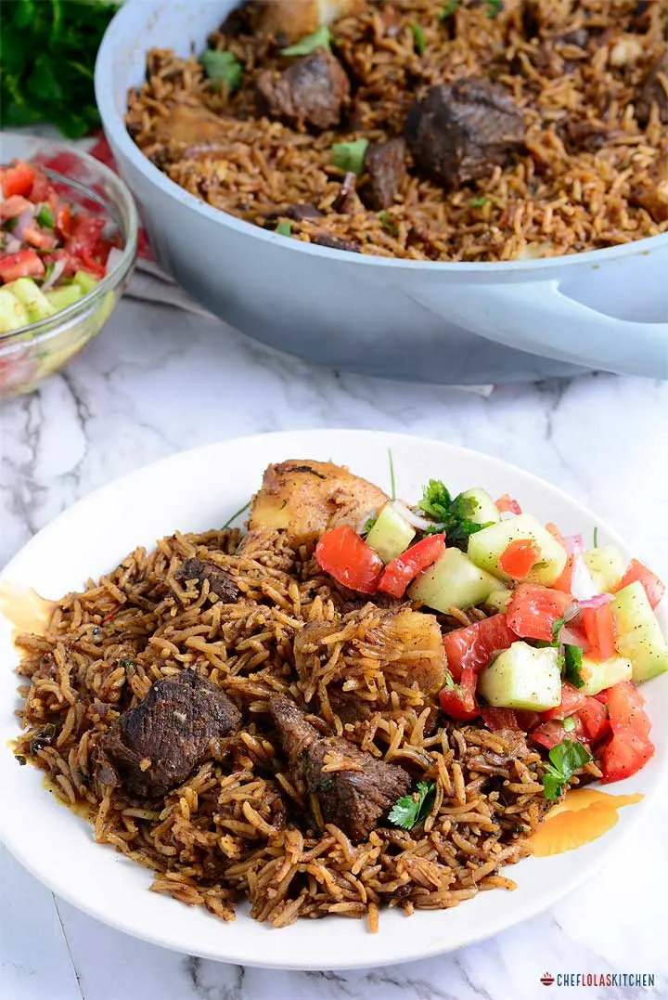

Pilau

Description
Pilau is a traditional, beautiful fragrant rice dish made with many aromatic spices that adds an amazing depth of flavor to the rice. It can be made with either beef or chicken.
Ingredients
- Pilau Masala
- 2 cups basmati rice
- 5 potatoes medium - peeled and cut into quarters
- ¼ cup vegetable oil
- 2 Red onions medium - thinly sliced
- 4 cloves garlic minced
- 2 tablespoons ginger minced
- 1 serrano chile finely chopped
- 1 tablespoon pilau masala
- 2 beef stock cubes
- ¼ cup fresh cilantro roughly chopped
- 1 lb beef sirloin cubed
- 3 Roma tomatoes diced
- 4 cups water
- 2 Bay leaves
- Salt to taste
Steps
- Heat a stockpot on medium-high heat. Add oil and heat until hot but not smoking.
- Add the sliced onions and fry for 10-15 minutes or till the onions starts to turn golden brown (be careful not to burn it).
- Add the garlic, ginger, serrano pepper, Cook for 1-2 minutes, until fragrant.
- Add the cubed beef, pilau masala, beef stock cubes, bay leaves, cilantro, and salt to taste. Cook until the meat browns and caramelizes stirring occasionally about 8 to 10 minutes.
- Add the diced tomatoes and cook for 4-5 minutes, until the tomatoes have released their liquid.
- Stir in the potatoes and the water. Bring to a boil and cook for 10 minutes.
- Stir in the rice, and cover tightly with a foil paper (to keep the steam in) if necessary. Reduce the heat to low and cook for 20 minutes, until the rice is cooked and the liquid is absorbed.
- Once the rice is dry, remove the foil paper and fluff with a fork to ensure the seasonings are well distributed all around the rice.
Hot with fresh Kachumbari – salsa. Enjoy!